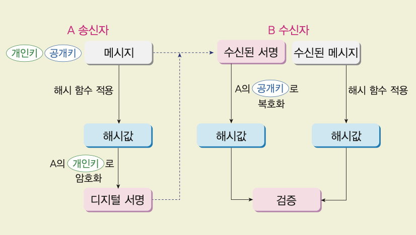

- 암호화(encryption) 평문을 암호문으로 바꾸는 과정
- 복호화(decryption) 암호문을 평문으로 복원하는 과정
01
p.48~49
디지털 데이터 암호화의 이해
권한이 없는 사람이 데이터를 알아볼 수 없게 바꾸어 보호한다
암호화, 복호화 과정
평문
2020
키(key)
암호 알고리즘
암호화
암호문
6EB8863CE399A2
키(key)
암호 알고리즘
복호화
평문
2020
- 키(key) 암호화 키는 암호 알고리즘 내에서 평문을 암호문으로 변경할 때 사용하는 문자열
- 암호 알고리즘 평문과 키를 이용해 암호문을 만들거나, 암호문을 평문으로 복원하는 변환 규칙
02
p.50
고대·근대 암호화 정리
문자를 숨기기 위해 자리 바꾸기와 문자 바꾸기를 사용했다
스키테일 암호
굵기와 길이가 같은 막대에 리본을 감아 메시지를 적고, 같은 막대에 다시 감아 읽는다.
SECRET MESSAGE
STSE ACMGREEES
평문의 문자 위치를 재배열
카이사르 암호
알파벳을 키만큼 평행 이동한 문자로 바꾸고, 복호화할 때는 반대로 이동한다.
ABCDEF
DEFGHI
에니그마
키보드 입력을 배전반과 회전자로 여러 번 치환해 발광판에 암호 문자를 출력한다.
키보드
배전반
회전자
발광판
03
p.49, 52
카이사르 암호 시뮬레이터
문자를 키만큼 이동해 암호화하고, 반대로 이동해 복호화한다
입력
알파벳 이동
알파벳이 끝나면 다시 A부터 이어진다.
결과
ORYH
04
p.52
카이사르 암호 퀴즈
문항마다 다른 키를 적용해 암호화와 복호화를 직접 확인해 보자
LOVE
SECRET
IL JHYLMBS MVY HZZHZZPUHAPVU
05
p.51
현대 암호화
컴퓨터 프로그램 기반 암호 기술로 디지털 정보를 보호하고 신뢰를 만든다
패스워드 암호화
서버는 사용자의 비밀번호를 그대로 저장하지 않고, 해시 함수로 만든 해시값을 저장한다.
password123
해시 함수
5d2cdaa...
아이디
비번
minji
5d2cdaa...
minsu
fhc65lc...
디지털 서명
송신자의 개인키로 서명을 만들고, 수신자는 송신자의 공개키로 검증해 신원을 확인한다.

HTTPS 암호화
주소가 https로 시작하는지 확인한다.
주소
https://
www.google.com/